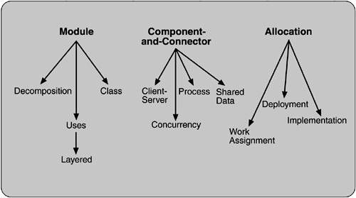

2.5 Architectural Structures and Views
The neurologist, the orthopedist, the hematologist, and the dermatologist all have a different view of the structure of a human body. Ophthalmologists, cardiologists, and podiatrists concentrate on subsystems. The kinesiologist and psychiatrist are concerned with different aspects of the entire arrangement's behavior. Although these views are pictured differently and have very different properties, all are inherently related: Together they describe the architecture of the human body.
So it is with software. Modern systems are more than complex enough to make it difficult to grasp them all at once. Instead, we restrict our attention at any one moment to one (or a small number) of the software system's structures. To communicate meaningfully about an architecture, we must make clear which structure or structures we are discussing at the moment—which view we are taking of the architecture.
We will be using the related terms structure and view when discussing architecture representation. A view is a representation of a coherent set of architectural elements, as written by and read by system stakeholders. It consists of a representation of a set of elements and the relations among them. A structure is the set of elements itself, as they exist in software or hardware. For example, a module structure is the set of the system's modules and their organization. A module view is the representation of that structure, as documented by and used by some system stakeholders. These terms are often used interchangeably, but we will adhere to these definitions.
Architectural structures can by and large be divided into three groups, depending on the broad nature of the elements they show.
Module structures.
Here the elements are modules, which are units of implementation. Modules represent a code-based way of considering the system. They are assigned areas of functional responsibility. There is less emphasis on how the resulting software manifests itself at runtime. Module structures allow us to answer questions such as What is the primary functional responsibility assigned to each module? What other software elements is a module allowed to use? What other software does it actually use? What modules are related to other modules by generalization or specialization (i.e., inheritance) relationships?
Component-and-connector structures.
Here the elements are runtime components (which are the principal units of computation) and connectors (which are the communication vehicles among components). Component-and-connector structures help answer questions such as What are the major executing components and how do they interact? What are the major shared data stores? Which parts of the system are replicated? How does data progress through the system? What parts of the system can run in parallel? How can the system's structure change as it executes?
Allocation structures.
Allocation structures show the relationship between the software elements and the elements in one or more external environments in which the software is created and executed. They answer questions such as What processor does each software element execute on? In what files is each element stored during development, testing, and system building? What is the assignment of software elements to development teams?
These three structures correspond to the three broad types of decision that architectural design involves:
How is the system to be structured as a set of code units (modules)? How is the system to be structured as a set of elements that have runtime behavior (components) and interactions (connectors)? How is the system to relate to nonsoftware structures in its environment (i.e., CPUs, file systems, networks, development teams, etc.)?
SOFTWARE STRUCTURES
Some of the most common and useful software structures are shown in Figure 2.3. These are described in the following sections.

Module
Module-based structures include the following.
Decomposition.
The units are modules related to each other by the "is a submodule of " relation, showing how larger modules are decomposed into smaller ones recursively until they are small enough to be easily understood. Modules in this structure represent a common starting point for design, as the architect enumerates what the units of software will have to do and assigns each item to a module for subsequent (more detailed) design and eventual implementation. Modules often have associated products (i.e., interface specifications, code, test plans, etc.). The decomposition structure provides a large part of the system's modifiability, by ensuring that likely changes fall within the purview of at most a few small modules. It is often used as the basis for the development project's organization, including the structure of the documentation, and its integration and test plans. The units in this structure often have organization-specific names. Certain U.S. Department of Defense standards, for instance, define Computer Software Configuration Items (CSCIs) and Computer Software Components (CSCs), which are units of modular decomposition. In Chapter 15, we will see system function groups and system functions as the units of decomposition.
Uses.
The units of this important but overlooked structure are also modules, or (in circumstances where a finer grain is warranted) procedures or resources on the interfaces of modules. The units are related by the uses relation. One unit uses another if the correctness of the first requires the presence of a correct version (as opposed to a stub) of the second. The uses structure is used to engineer systems that can be easily extended to add functionality or from which useful functional subsets can be easily extracted. The ability to easily subset a working system allows for incremental development, a powerful build discipline that will be discussed further in Chapter 7.
Layered.
When the uses relations in this structure are carefully controlled in a particular way, a system of layers emerges, in which a layer is a coherent set of related functionality. In a strictly layered structure, layer n may only use the services of layer n – 1. Many variations of this (and a lessening of this structural restriction) occur in practice, however. Layers are often designed as abstractions (virtual machines) that hide implementation specifics below from the layers above, engendering portability. We will see layers in the case studies of Chapters 3, 13 and 15.
Class, or generalization.
The module units in this structure are called classes. The relation is "inherits-from" or "is-an-instance-of." This view supports reasoning about collections of similar behavior or capability (i.e., the classes that other classes inherit from) and parameterized differences which are captured by subclassing. The class structure allows us to reason about re-use and the incremental addition of functionality.
Component-and-Connector
These structures include the following.
Process, or communicating processes.
Like all component-and-connector structures, this one is orthogonal to the module-based structures and deals with the dynamic aspects of a running system. The units here are processes or threads that are connected with each other by communication, synchronization, and/or exclusion operations. The relation in this (and in all component-and-connector structures) is attachment, showing how the components and connectors are hooked together. The process structure is important in helping to engineer a system's execution performance and availability.
Concurrency.
This component-and-connector structure allows the architect to determine opportunities for parallelism and the locations where resource contention may occur. The units are components and the connectors are "logical threads." A logical thread is a sequence of computation that can be allocated to a separate physical thread later in the design process. The concurrency structure is used early in design to identify the requirements for managing the issues associated with concurrent execution.
Shared data, or repository.
This structure comprises components and connectors that create, store, and access persistent data. If the system is in fact structured around one or more shared data repositories, this structure is a good one to illuminate. It shows how data is produced and consumed by runtime software elements, and it can be used to ensure good performance and data integrity.
Client-server.
If the system is built as a group of cooperating clients and servers, this is a good component-and-connector structure to illuminate. The components are the clients and servers, and the connectors are protocols and messages they share to carry out the system's work. This is useful for separation of concerns (supporting modifiability), for physical distribution, and for load balancing (supporting runtime performance).
Allocation
Allocation structures include the following.
Deployment.
The deployment structure shows how software is assigned to hardware-processing and communication elements. The elements are software (usually a process from a component-and-connector view), hardware entities (processors), and communication pathways. Relations are "allocated-to," showing on which physical units the software elements reside, and "migrates-to," if the allocation is dynamic. This view allows an engineer to reason about performance, data integrity, availability, and security. It is of particular interest in distributed or parallel systems.
Implementation.
This structure shows how software elements (usually modules) are mapped to the file structure(s) in the system's development, integration, or configuration control environments. This is critical for the management of development activities and build processes.
Work assignment.
This structure assigns responsibility for implementing and integrating the modules to the appropriate development teams. Having a work assignment structure as part of the architecture makes it clear that the decision about who does the work has architectural as well as management implications. The architect will know the expertise required on each team. Also, on large multi-sourced distributed development projects, the work assignment structure is the means for calling out units of functional commonality and assigning them to a single team, rather than having them implemented by everyone who needs them.
Table 2.1 summarizes the software structures. The table lists the meaning of the elements and relations in each structure and tells what each structure might be used for.
Table 2.1. Architectural Structures of a System
|
Decomposition
|
Is a submodule of; shares secret with
|
Resource allocation and project structuring and planning; information hiding, encapsulation; configuration control
|
|
Uses
|
Requires the correct presence of
|
Engineering subsets; engineering extensions
|
|
Layered
|
Requires the correct presence of; uses the services of; provides abstraction to
|
Incremental development; implementing systems on top of "virtual machines" portability
|
|
Class
|
Is an instance of; shares access methods of
|
In object-oriented design systems, producing rapid almost-alike implementations from a common template
|
|
Client-Server
|
Communicates with; depends on
|
Distributed operation; separation of concerns; performance analysis; load balancing
|
|
Process
|
Runs concurrently with; may run concurrently with; excludes; precedes; etc.
|
Scheduling analysis; performance analysis
|
|
Concurrency
|
Runs on the same logical thread
|
Identifying locations where resource contention exists, where threads may fork, join, be created or be killed
|
|
Shared Data
|
Produces data; consumes data
|
Performance; data integrity; modifiability
|
|
Deployment
|
Allocated to; migrates to
|
Performance, availability, security analysis
|
|
Implementation
|
Stored in
|
Configuration control, integration, test activities
|
|
Work Assignment
|
Assigned to
|
Project management, best use of expertise, management of commonality
|
Although we often think about a system's structure in terms of its functionality, there are system properties in addition to functionality, such as physical distribution, process communication, and synchronization, that must be considered at an architectural level. Each structure provides a method for reasoning about some of the relevant quality attributes. The uses structure, for instance, must be engineered (not merely recorded) to build a system that can be easily extended or contracted. The process structure is engineered to eliminate deadlock and reduce bottlenecks. The module decomposition structure is engineered to produce modifiable systems, and so forth. Each structure provides the architect with a different view into the system and a different leverage point for design.
RELATING STRUCTURES TO EACH OTHER
Each of these structures provides a different perspective and design handle on a system, and each is valid and useful in its own right. Although the structures give different system perspectives, they are not independent. Elements of one will be related to elements of others, and we need to reason about these relations. For example, a module in a decomposition structure may be manifested as one, as part of one, or as several components in one of the component-and-connector structures, reflecting its runtime alter ego. In general, mappings between structures are many to many.
Individual projects sometimes consider one structure dominant and cast other structures, when possible, in terms of it. Often, but not always, the dominant structure is module decomposition. This is for a good reason: It tends to spawn the project structure. Scenarios, described in Chapter 4, are useful for exercising a given structure as well as its connections to other structures. For example, a software engineer wanting to make a change to the client-server structure of a system would need to consider the process and deployment views because client-server mechanisms typically involve processes and threads, and physical distribution might involve different control mechanisms than would be used if the processes were colocated on a single machine. If control mechanisms need to be changed, the module decomposition or layered view would need to be considered to determine the extent of the changes.
Not all systems warrant consideration of many architectural structures. The larger the system, the more dramatic the differences between these structures tend to be; however, for small systems we can often get by with less. Instead of working with each of several component-and-connector structures, a single one will do. If there is only one process, then the process structure collapses to a single node and need not be carried through the design. If there is to be no distribution (that is, if there is just one processor), then the deployment structure is trivial and need not be considered further.
Structures represent the primary engineering leverage points of an architecture. Individual structures bring with them the power to manipulate one or more quality attributes. They represent a powerful separation-of-concerns approach for creating the architecture (and, later, for analyzing it and explaining it to stakeholders). And, as we will see in Chapter 9, the structures that the architect has chosen as engineering leverage points are also the primary candidates for the basis for architecture documentation.
WHICH STRUCTURES TO CHOOSE?
We have briefly described a number of useful architectural structures, and there are many more. Which ones should an architect work on? Which ones should the architect document? Surely not all of them.
There is no shortage of advice. In 1995, Philippe Kruchten [Kruchten 95] published a very influential paper in which he described the concept of architecture comprising separate structures and advised concentrating on four. To validate that the structures were not in conflict with each other and together did in fact describe a system meeting its requirements, Kruchten advised using key use cases as a check. This so-called "Four Plus One" approach became popular and has now been institutionalized as the conceptual basis of the Rational Unified Process. Kruchten's four views follow:
Logical.
The elements are "key abstractions," which are manifested in the object-oriented world as objects or object classes. This is a module view.
Process.
This view addresses concurrency and distribution of functionality. It is a component-and-connector view.
Development.
This view shows the organization of software modules, libraries, subsystems, and units of development. It is an allocation view, mapping software to the development environment.
Physical.
This view maps other elements onto processing and communication nodes and is also an allocation view (which others call the deployment view).
At essentially the same time that Kruchten published his work, Soni, Nord, and Hofmeister [Soni 95] published an influential paper in which they reported the structures put into use across many projects by the software architects in their organization. Their views were conceptual, module interconnection, execution, and code. Once again, these map clearly to the module, component-and-connector, and allocation models.
Other authors followed, and the list of available structures grows ever more rich. Of course, you should not use them all even though most of them will in fact exist in the system you are building. Instead, consider that one of the obligations of the architect is to understand how the various structures lead to quality attributes, and then choose the ones that will best deliver those attributes. This point will be treated at greater length in Chapter 9, on architectural representation.
|